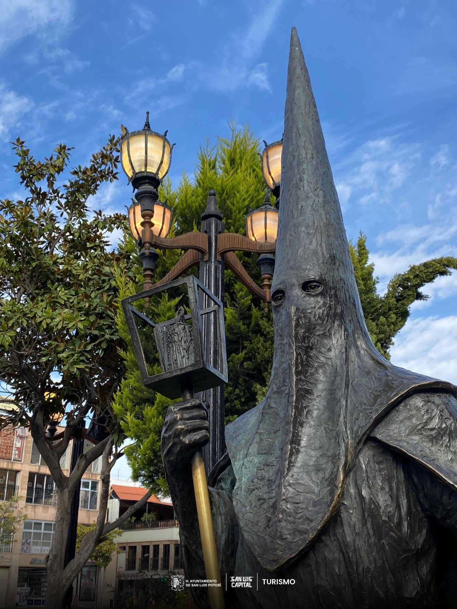

Turismo Municipal
INICIO
TURISMO SOCIAL
TURISMO DE REUNIONES
ATENCION AL TURISTA
CAPACITACIÓN TURISTICA
QUIENES SOMOS?
Descubre los lugares más emblemáticos, eventos y actividades que nuestra ciudad tiene para ofrecer.
Centro Histórico de San Luis Potosí
El corazón histórico de la ciudad, con arquitectura colonial y sitios emblemáticos.
Parque Tangamanga I
El parque urbano más grande de México, ideal para actividades al aire libre y recreativas.
Museo Regional Potosino
Un museo que exhibe la historia y la cultura de la región potosina.
Templo del Carmen
Una iglesia barroca con una impresionante fachada y obras de arte religioso en su interior.
